File|New|Project...|Java|Terracotta Projects|Terracotta DSO Project menu. 
Name the project
DSO Tutorial and accept the default location for the project within your workspace.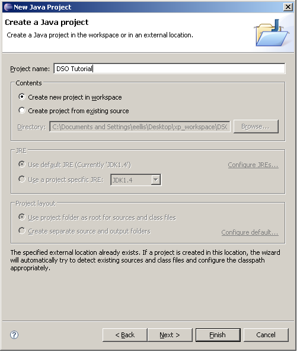
The goal of this tutorial is to create a simple DSO Application with clear step-by-step instructions, exploring the main concepts of Terracotta DSO along the way. We will start out by creating a standard Eclipse application, then convert the application over to DSO.
The application we will create is a simple Swing GUI application that displays a window containing a slider. We will then convert the project to use DSO and configure the application such that the slider value will be transparently shared among multiple instances of the application. When running multiple instances of the application, dragging the slider in one window will automatically update the values of the sliders in each of the other windows. Finally, we will create a second, similar application that will display the shared slider value in a text label.
First create a standard Java project by using the File|New|Project...|Java|Terracotta Projects|Terracotta DSO Project menu.
Name the project DSO Tutorial and accept the default location for the project within your workspace.
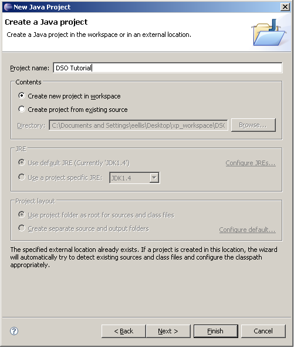
Next create a new class by invoking the File|New|Class menu. Specify the package name as tutorial and the class name as Slider.
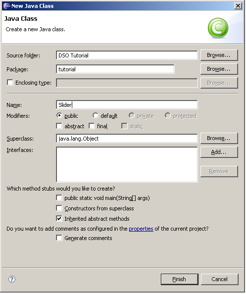
The new class will appear in a Java Code Editor. Enter the following code for the Slider module:
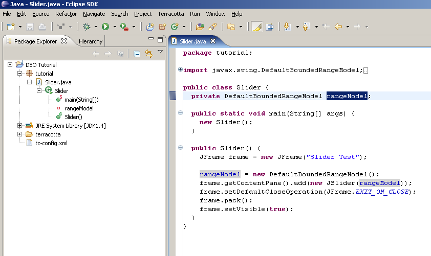
package tutorial;
import javax.swing.DefaultBoundedRangeModel;
import javax.swing.JFrame;
import javax.swing.JSlider;
public class Slider {
private DefaultBoundedRangeModel rangeModel;
public static void main(String[] args) {
new Slider();
}
public Slider() {
JFrame frame = new JFrame("Slider Test");
rangeModel = new DefaultBoundedRangeModel();
frame.getContentPane().add(new JSlider(rangeModel));
frame.setDefaultCloseOperation(JFrame.EXIT_ON_CLOSE);
frame.pack();
frame.setVisible(true);
}
}
The Slider constructor creates a window (JFrame), sets the window such that closing it terminates the process, adds a slider to the window, packs the window to its preferred size, and makes the window visible. The static main() method is required to run the class as an application.
You might notice that we explicity declared a DefaultBoundedRangeModel instance variable. Normally you would not need to create a model for a slider but for the purposes of this tutorial we have since it is that model that we plan on sharing with DSO.
If you don't have the Project|Build Automatically option enabled, compile the Slider class using the Project|Build Project menu. Invoke the context menu on the Slider module and choose Run As|Java Application. The window containing the slider should appear in the upper left corner of your display.

If you run another instance of the Slider class using the same procedure you will have two separately executing copies of the application. Our goal in the next section is to make it such that dragging one of the two sliders causes both to display the same value. We will accomplish this goal without changing the existing code at all but rather by converting the Tutorial project into a DSO project.
To convert our standard Java project to a DSO project, invoke the context menus on the DSO Tutorial project node in the Package Explorer view and select Terracotta|Add Terracotta Nature. You will be asked to specify the location within the project where you would like the configuration file, tc-config.xml, to be stored. By default the file will be created in your root project folder.
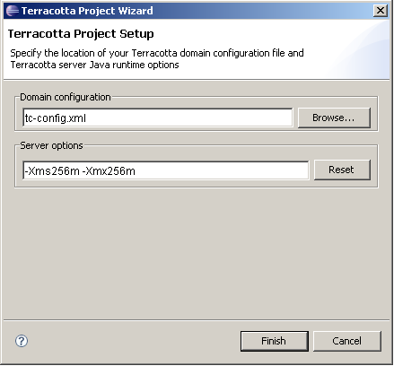
Click Finish to complete the conversion of your project. A folder named terracotta will be created in the root of your project, meant to contain any files created by the DSO runtime, such as log files. The tc-config.xml file specifies a default server configuration named localhost that will write its log files in the terracotta/server-logs folder. Client logs will be store in terracotta/client-logs.
At this point you can run the Terracotta Server in one of several ways. You'll notice a new drop-down menu control has been added to the workspace toolbar. That drop-down menu contains all the server configurations that have been added to tc-config.xml. There should be a single entry labeled localhost which you should select.
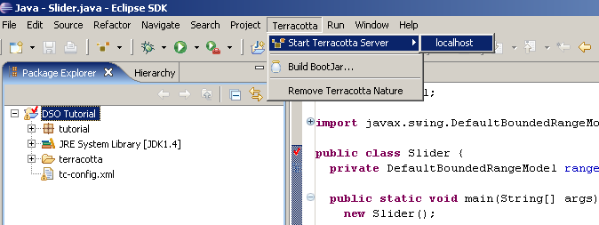
The Terracotta server will be run using the information specified for localhost in the server section of tc-config.xml. You can stop the server by invoking the Stop Terracotta Server project context menu.
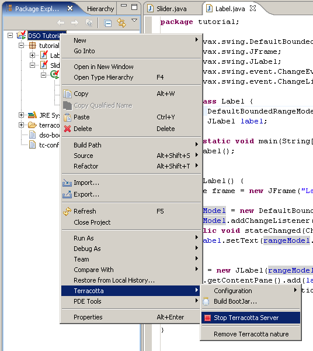
If you attempt to start a new server when one is already running, the running server will first be stopped and then a new server will start. Go ahead and stop the server now.
To accomplish our goal of sharing the slider model amongst multiple running instances of our application, we will need to take several configuration steps:
Slider instance variable rangeModel be a DSO Shared Root
DefaultBoundedRangeModel
DefaultBoundedRangeModel
DefaultBoundedRangeModel
In the following section each of these steps will be described in detail. Finally, we will run our newly configured DSO application.
To declare our shared slider model, select the rangeModel instance variable in the Source Editor and use the Terracotta|Field rangeModel|Shared root context menu.
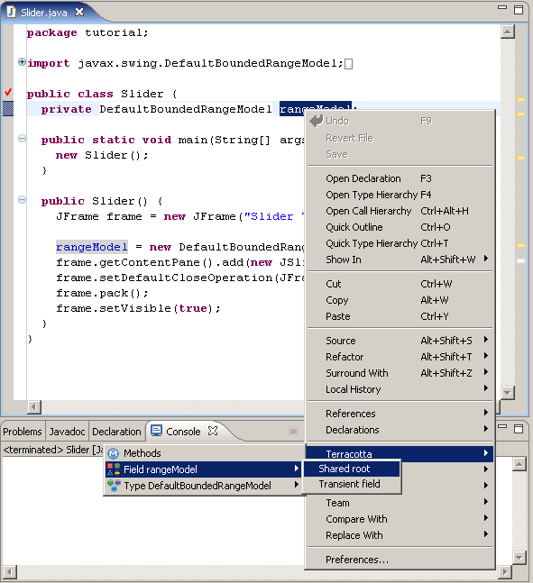
You could also have specified the shared root by navigating to the field in the Package Explorer view, using the context menu on the rangeModel field there. There are quite a number of ways to accomplish nearly all of the tasks needed to configure an application for use with DSO. The DSO Configuration Editor, which can be accessed via the Open with... Terracotta Config context-menu on the DSO configuration file node, provides graphical editors for carrying out all DSO configuration activities. For instance, the Roots panel of the the DSO Config tab lets you see and manipulate the complete set of roots specified in the configuration. You could have chosen to Add the new root, and then Select'ed rangeModel from the Field Navigator.
NOTE: You will need to save the config file before changes take effect.
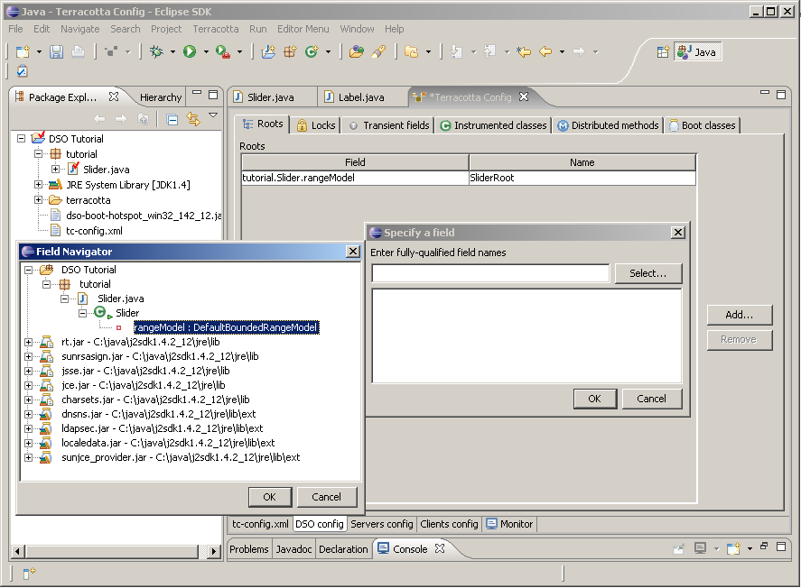
As a side-effect of declaring rangeModel as a shared root, the declaring type Slider and the rangeModel type, javax.swing.DefaultBoundedRangeModel, are declared as being instrumented classes. Furthermore, since DefaultBoundedRangeModel is a system type and not a class that is pre-instrumented by Terracotta, it is also declared as an additional bootjar class. When it comes time to run our Slider application the DSO plugin will ensure that a custom bootjar is created based off the configuration file we are in the process of creating. You can manually create a custom bootjar from your configuration at any time by using the Build BootJar... menu.
Since DefaultBoundedRangeModel was not written for multi-threaded operation, we will need to declare DSO Named Locks on any methods that change any part of the model. These methods are known as the model mutators. In this case we need to know about how DefaultBoundedRangeModel works. By inspecting the code it would seem that setValue() is the method that actually sets the slider value:
public void setValue(int n) {
int newValue = Math.max(n, min);
if(newValue + extent > max) {
newValue = max - extent;
}
setRangeProperties(newValue, extent, min, max, isAdjusting);
}
But we can see that setValue() delegates to setRangeProperties() to set the slider values. So we need to create a Name Lock on setRangeProperties(). Select that method name and hit F3 to go to it's body. Next use the Terracotta|Locks|Named context menu to add the lock to the DSO configuration. Alternatively, use the Instrumented classes page of the DSO Config tab of the Configuration Editor to add the new Name Lock and select the method using the Method Navigator. By default the new lock will be a WRITE lock, which is what we want.
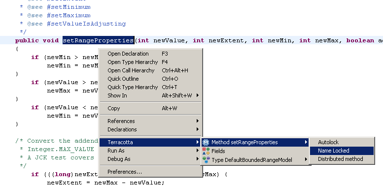
All Swing models implement a listener interface to inform other objects of changes to the model state. Objects add themselves as listeners of the model and respond to callbacks issued by the model upon change. In this case the range model declares a list of ChangeListeners which it notifies of changes via its fireStateChanged() method. It is this method that we must make distributed, meaning that it will be invoked on each of the Slider models in each of our DSO applications. Select the name of the fireStateChanged() method and use the Terracotta|Methods|Distributed context menu to add this distributed method to your DSO configuration, or use the DSO Configuration Editor.
The list of listeners that the range model notifies upon change is held in an instance variable named listenerList:
/** The listeners waiting for model changes. */
protected EventListenerList listenerList = new EventListenerList();
We need to add this variable as a Transient Field in the configuration so that DSO knows not to try to share this field across applications. This list contains references to Swing UI delegates, or views, that are display-specific and thus should not be shared by DSO. If this instance variable had been declared to be a Java transient, we could have just enabled the honor-transients attribute of the DefaultBoundedRangeModel's DSO instrumentation specification. As it turns out, we still need to enable its honor-transients attribute because the model lazily maintains a ChangeEvent that it uses to pass to the listeners held in listenerList, and that ChangeEvent is declared as a Java transient. By lazily we refer to the fact that the model always checks to see if the event is null before using it to announce a change, and re-initializes it, if so. It functions like this to support Java object serialization.
To add this field as a transient, select its name in the declaration and use the Terracotta|Fields|Transient context menu.
Now that we have ensured that DSO will not attempt to share either the listenerList or changeEvent, we need a way to ensure the listenerList is available to shared instances of the model when it is loaded into a DSO client from a DSO server. It's important to understand that the first time the Slider application is run in the context of DSO, the model is created through the normal invocation of its default constructor:
rangeModel = new DefaultBoundedRangeModel();
This code results in the DSO root we previously declared, rangeModel, being transmitted to the DSO server. All subsequent changes made to the state of the model are also sent to the server for possible re-transmission to any other connected clients. When the second Slider application is executed, DSO queries the server to see if there is a shared instance already defined, finds that there is, and returns that instance to be assigned to the root field. To be clear, even in the first application DSO looked for a pre-existing instance of the root in the server, but it just didn't find one, so the normal construction took place.
This shared object lifecycle is important to understanding why and how we can make sure a shared object that contains transient state can see that state as if it were not being transparently managed by DSO.
We need to specify to DSO how to cause the model's listenerList to be reinitialized when the model is loaded from the DSO server. There are three different ways do accomplish this:
The following are descriptions of these three methods. The third, providing a BeanShell script is the method that we will use for this tutorial exercise.
Lazy Initialization is the method described earlier, used by the DefaultBoundedRangeModel to ensure that its changeEvent is always non-null prior to its use in change notification:
protected void fireStateChanged()
{
Object[] listeners = listenerList.getListenerList();
for (int i = listeners.length - 2; i >= 0; i -=2 ) {
if (listeners[i] == ChangeListener.class) {
if (changeEvent == null) {
changeEvent = new ChangeEvent(this);
}
((ChangeListener)listeners[i+1]).stateChanged(changeEvent);
}
}
}
The model simply checks for a null changeEvent and recreates it if needed.
Specifying an Initialization Method entails adding a method to your DSO-instrumented class whose purpose is to re-initialize any transient data, and specifying that method by name in the class's instrumentation specification using the on-load method element:
<include>
<class-expression>com.my.Class</class-expression>
<on-load>
<method>initTransients</method>
</on-load>
</include>
The specified method must have public access, return void and have no arguments. Note that in order to use this technique for our Slider application, we would have needed to subclass, or extend, DefaultBoundedRangeModel to add the new initialization method.
Providing BeanShell Script entails using the on-load execute element to write BeanShell script that initializes a class's transient data. In the case of the DefaultBoundedRangeModel class, we will provide the following script to initialize the listenerList:
<include>
<class-expression>javax.swing.DefaultBoundedRangeModel</class-expression>
<on-load>
<execute>self.listenerList = new EventListenerList();</execute>
</on-load>
</include>
This is a powerful technique that does not require us to subclass the model.
You can accomplish all of these tasks by using the Instrumented classes page of the DSO Configuration Editor.
To this point we have done all configuration tasks through context menus. Now lets take a more detailed look at the complete configuration picture. To view the DSO Configuration Editor, use the Open with...|Terracotta Config context menu on tc-config.xml.

The Configuration Editor will be displayed, showing the raw XML as well as various pages displaying that information in a structured way. We are most interested in the DSO Config page, which contains futher pages broken down by content area.
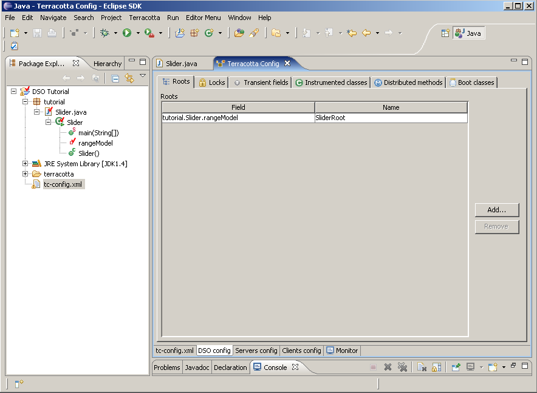
Go to the Roots page to validate that our shared root tutorial.Slider.rangeModel is listed.
Go to the Locks page to be sure there is a Named write-lock on javax.swing.DefaultBoundedRangeModel.setRangeProperties().
Go to the Instrumented Classes page to be sure both tutorial.Slider and javax.swing.DefaultBoundedRangeModel are listed, and that DefaultBoundedRangeModel has Honor transients enabled and the proper BeanShell script to be executed On load.
Go to the Distributed Methods page to be sure javax.swing.DefaultBoundedRangeModel.fireStateChanged() is listed.
Go to the Transient Fields page to be sure javax.swing.DefaultBoundedRangeModel.listenerList is listed.
Go to the Boot Classes page to be sure javax.swing.DefaultBoundedRangeModel is listed.
And finally, make sure you save the config and restart the server
Now that we've confirmed that our configuration settings are in place, we can run our DSO application. If you stopped the server that we ran at the beginning of this tutorial, be sure to restart it now. To execute the Slider class use the Run As|Terracotta DSO Application context menu in the Java Source Editor for Slider.java.
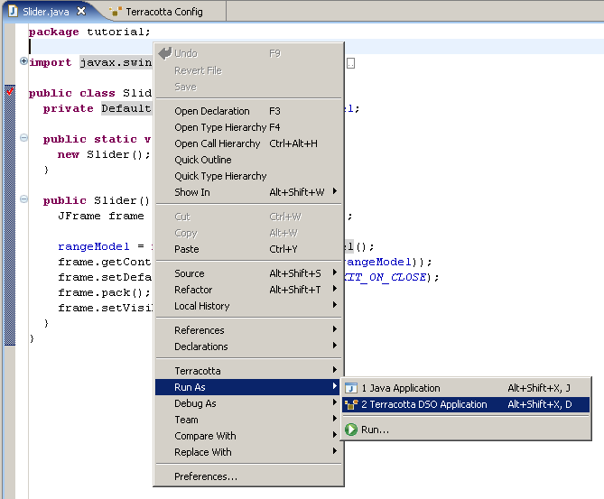
You should see some output in the Console View indicating that the DSO runtime environment has been activated. The Slider window should appear in the upper left corner of your display. Now repeat this procedure to run a second instance of the Slider DSO application. The second window will appear directly overtop of the first window. Move the second window so that both windows can be viewed at once. Now drag one of the sliders and see how the second slider updates automatically to the same value.
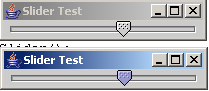
We have created a single DSO application and have seen that we can transparently share a field among multiple running copies of that application. Now we will create a different application class that also shares the same range model but displays it in a different way.
Use the File|New|Class menu to create a class named Label in package tutorial. Copy the following code into the new Label class:
package tutorial;
import javax.swing.DefaultBoundedRangeModel;
import javax.swing.JFrame;
import javax.swing.JLabel;
import javax.swing.event.ChangeEvent;
import javax.swing.event.ChangeListener;
public class Label {
private DefaultBoundedRangeModel rangeModel;
private JLabel label;
public static void main(String[] args) {
new Label();
}
public Label() {
JFrame frame = new JFrame("Label Test");
rangeModel = new DefaultBoundedRangeModel();
rangeModel.addChangeListener(new ChangeListener() {
public void stateChanged(ChangeEvent e) {
label.setText(rangeModel.getValue()+"");
}
});
label = new JLabel(rangeModel.getValue()+"");
frame.getContentPane().add(label);
frame.setDefaultCloseOperation(JFrame.EXIT_ON_CLOSE);
frame.pack();
frame.setVisible(true);
}
}
This class is very similar to the original Slider class except that it uses a label to display the slider value. To configure this class as a DSO application, make the rangeModel a shared root and be sure the Label class is declared as instrumented. The important point to make about this enhancement is that we must be sure to give this root the same name as the original root declared for the Slider application. If not set, a root's name is the same as it's field-name. That is, tutorial.Slider.rangeModel is the field-name and, if not otherwise specified, it is also the root-name. We need to give the Slider.rangeModel root a name of SliderRoot and also assign that name to the Label.rangeModel root. By giving these two roots the same name, they are treated as the same shared object by DSO.
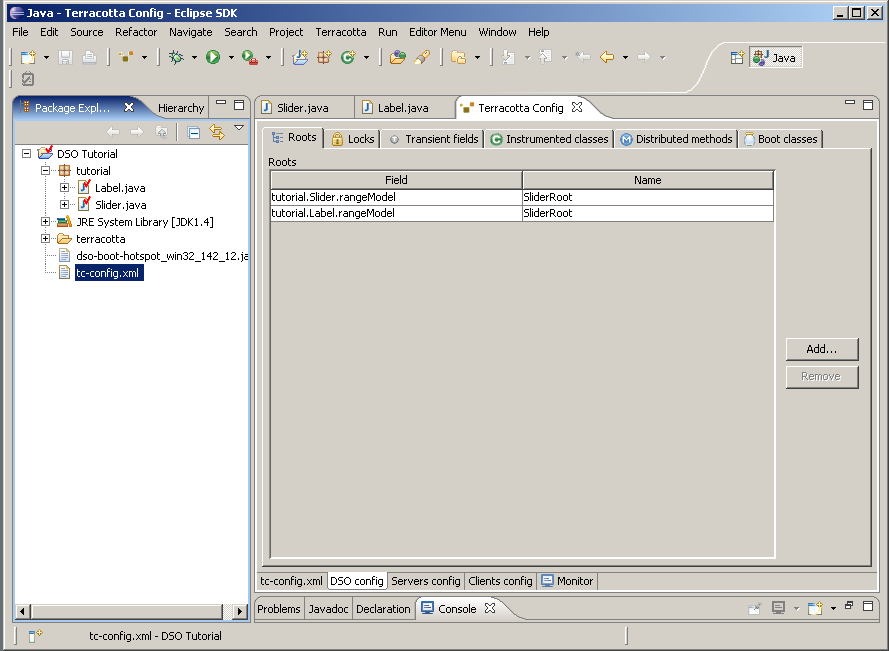
Since we changed the Slider's root name in the DSO configuration, we will need to restart those applications to pick up the new changes.
Now run the Label DSO application in the same way we previously ran the Slider DSO application. The Label window should appear with an initial value of 42 displayed. Now change one of the sliders and you will see the label update to the slider's new value.
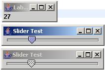
In this tutorial we created a simple Swing application which we then converted to a DSO application, learning the necessary configuration needed to transparently share a simple data model among multiple instances of the same application. We then took the further step of sharing that same data model with a completely different application by simply declaring the same shared object name. The data model that was shared was a system class, loaded from the Java boot classpath, requiring some special treatment to integrate with the DSO runtime.
Hopefully this introduction to Terracotta DSO has made clear the potential power provided by a non-API, declarative approach to transparent data sharing.